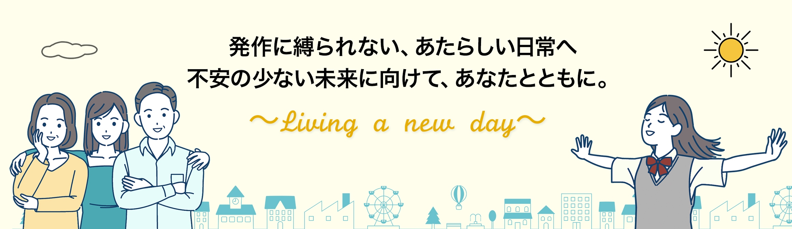
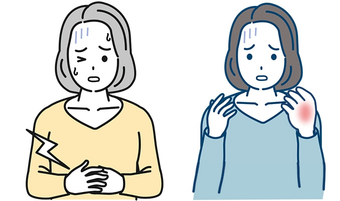

心配ごとや我慢していることはありませんか？
遺伝性血管性浮腫（HAE）は、正しい知識と適切な対応方法を身につけることで、不安を和らげながら安心して日常生活を送ることができる疾患です。
HAE患者さんは、発作がない時でも「いつ発作が起きるかわからない」という不安を抱えることが少なくありません。
しかし近年、さまざまな治療薬が登場し、適切な治療を受けることで症状をコントロールできるようになってきています。
発作に縛られず、自分らしい生活を目指せる時代になっています。
遺伝性血管性浮腫（HAE）とは
腫れ、むくみの原因と症状
HAEは体中のいたるところに一過性の「腫れ」を繰り返す病気です。腫れは、血管の中の水分が血管の外にしみ出すことによって起こります。
HAEの急性発作の原因となる因子、腫れる場所や症状について詳しく解説します。病気について正しく理解しましょう。

HAEの治療
HAEの治療は「発作が起きた時に発作を抑える治療」と「発作が起きないように予防する治療」の2つに大きく分けられます。
発作が起きた時に発作を抑える治療
発作時治療（発作が起きてしまった際に行う治療）
発作が起きた時に薬を使用し、腫れの症状を抑える治療です。発作はいつ・どこに起こるのか予測が難しく、予防を行っていても起こることがあるので、薬をいつも携帯し準備をしておくことが大切です。
発作が起きないように予防する治療
短期予防（発作のリスクを高める行為の前に行う治療）
抜歯や内視鏡を用いた検査、また手術のような体に負担がかかり発作が起きるリスクがある出来事の前に薬を注射し、発作を予防します。
長期予防（発作が起きないようにする治療）
定期的な投薬や服薬を行うことで、発作の頻度や程度を抑える治療です。
発作の治療と予防はこちらサポートツール
患者さん向けアプリ
通院予定やお薬の管理、発作症状の記録などがスマートフォンで簡単に行えるアプリです。 設定した通院日や薬を服用する時間になると、通知機能でお知らせしてくれます。 また、発作の回数や症状を振り返るためのレポート機能も搭載されており、通院の際により正確な体調の経過を主治医に伝えるのに役立ちます。
HAE Q&A
HAEの治療について、日常生活で気をつけることなど、患者さんのさまざまな気になる質問にお答えします。
妊娠・出産・授乳時の留意点や、医療費助成制度についてのよくある質問についても解説します。
監修：
医療法人埼友会 埼友草加病院 院長
大澤 勲 先生